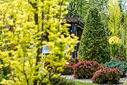

When it comes to turning a house into a welcoming home, landscaping is key. For homeowners and real estate professionals in Smithville, trees are more than just a decorative element—they bring shade, character, and value to any property. Thoughtfully placed trees enhance curb appeal, provide energy savings, and create inviting outdoor spaces that feel like an extension of the home. Whether you’re settling into a newly built house or revitalizing an older property, partnering with tree companies in Smithville like Ben Bivins Tree Experts can transform your yard into a beautiful, functional, and sustainable landscape.
Why Trees Matter in Landscaping

Trees play a vital role in landscaping. They offer both aesthetic and practical benefits that enhance the value and functionality of any property. Mature trees can provide significant energy savings by reducing summer temperatures around a home by up to 20 degrees. Additionally, strategically placed evergreens offer privacy and shield against harsh winter winds. Beyond these practical advantages, trees add depth, beauty, and serenity to outdoor spaces, creating a welcoming atmosphere for homeowners and guests. Healthy, well-maintained trees also contribute to increased property value, making them a smart investment for any landscape.How Tree Companies in Smithville Contribute
Smithville tree companies bring invaluable local expertise to landscaping projects by offering a wide array of services. These services ensure the success and longevity of your outdoor spaces. They guide homeowners in selecting tree species best suited for Smithville’s soil and climate, from fast-growing shade trees to ornamental varieties, ensuring choices that are both functional and visually appealing. Proper planting is another critical area where professionals excel. They ensure optimal depth, spacing, sunlight, and drainage for healthy tree growth. Maintenance plans tailored to specific landscaping needs, including pruning, fertilization, and pest management, keep trees vibrant and thriving. Storm damage prevention is another key service. Experts can identify and address weak or overgrown branches that pose hazards during severe weather. Many Smithville tree companies also embrace eco-friendly practices, such as recycling tree waste into mulch and planting native species that support the local ecosystem, contributing to sustainable landscaping.
Benefits for Real Estate Firms
Thoughtful landscaping can significantly enhance a property’s marketability. It can be a powerful tool for real estate firms. By partnering with Smithville tree companies, agents can create outdoor spaces that captivate buyers at first glance. Unique features like flowering trees, shaded backyard retreats, or well-placed evergreens not only boost curb appeal but also create a sense of charm and livability. These carefully designed landscapes increase the perceived value of a home, often making a lasting impression on potential buyers before they even step inside.
Tips for Homeowners
For homeowners looking to elevate their outdoor spaces, thoughtful planning and maintenance are key. Start by collaborating with landscaping experts to develop a cohesive design that aligns with your vision and complements your property. Investing in regular tree care, such as pruning and pest management, ensures your landscape remains healthy and visually appealing. It also boosts your home’s value. Additionally, consider the long-term growth of your trees. By selecting species that will enhance your home’s architecture and adapt to your family’s evolving needs, you’re ensure that you can avoid unnecessary tree removal in the future. With careful planning and upkeep, your landscaping can become a lasting source of beauty and functionality.
Partnering for Success with Tree Companies in Smithville
Investing in landscaping goes beyond simply planting trees. Proper landscape is about crafting a long-term vision for your property that enhances both its beauty and functionality. Healthy, well-maintained trees can increase your home’s value by up to 15%, while also providing practical benefits like shade, energy savings, and improved outdoor living spaces. Thoughtful landscaping not only boosts curb appeal but also enriches your daily life. It creates a serene and inviting environment for you and your family. For expert guidance in transforming your outdoor spaces, trust Ben Bivins Tree Experts. With our extensive experience and commitment to excellence, we’ll help you design, plant, and maintain a thriving landscape that stands the test of time. Whether you’re starting fresh with a new home or revitalizing an existing property, Ben Bivins Tree Experts is your trusted tree company in Smithville. Contact us today!